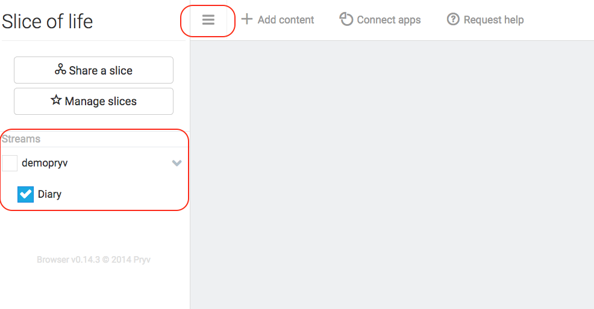
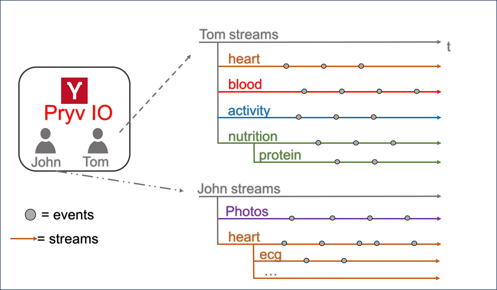
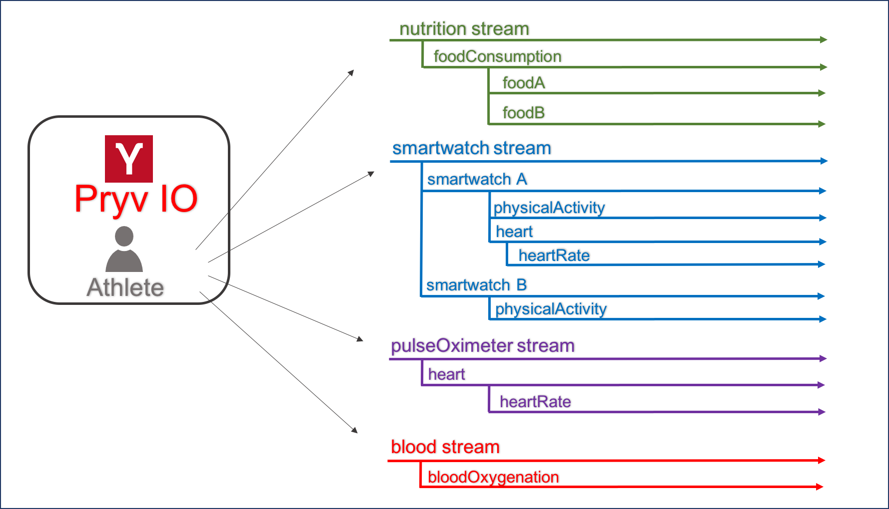
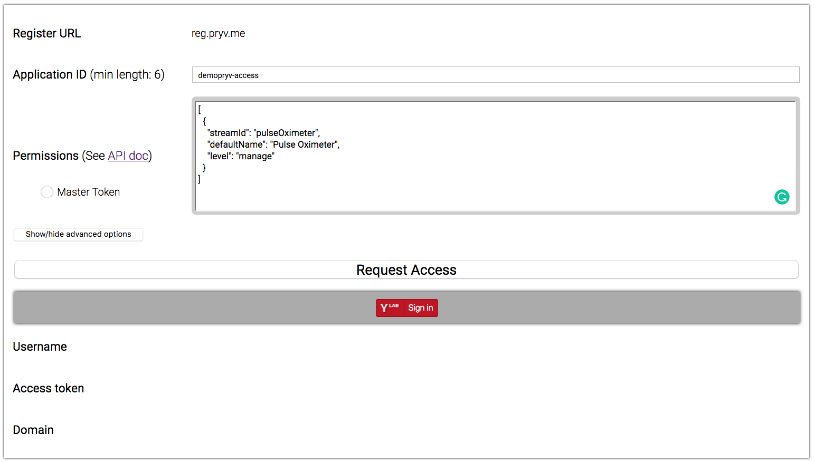
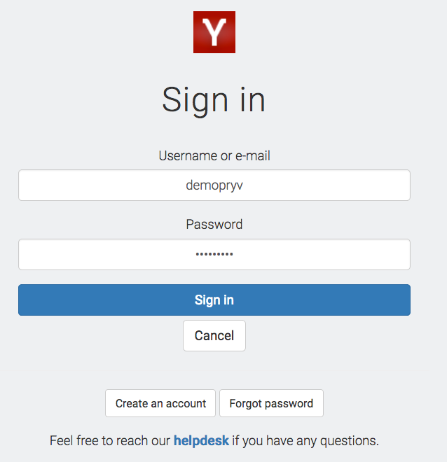
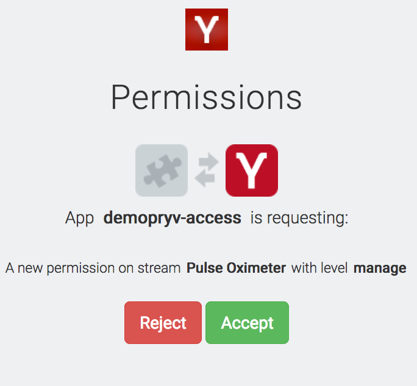
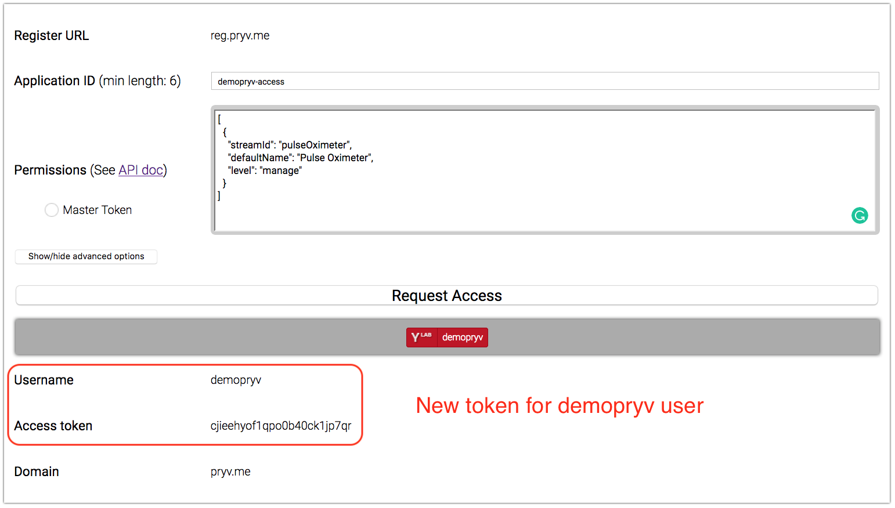
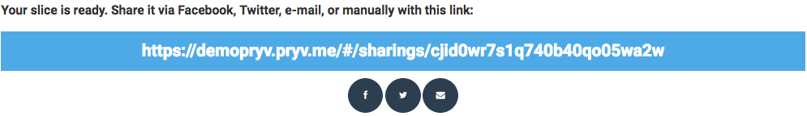

Get started with Pryv.IO API
In this tutorial, we will help you to try out and evaluate Pryv API for your projects.
Throughout all the steps, we will use Pryv.me, our Lab platform for testing Pryv API.
We will guide you through:
User creation
By registering in Pryv.me, you will have access to a Pryv user and a fully-functional Pryv.IO environment hosted in our infrastructure which is free for testing.
- Go to https://sw.pryv.me/access/register.html
- Fill in the form, choose where you want to store your data
and click on Create
That's it! You will receive a welcome email from Pryv.me with your account details.
Sign-in with your Pryv.me user
Go to the following address to sign-in with your Pryv account :
https://{username}.pryv.me/#/SignIn
You have now access to your Pryv account through the Pryv.IO demo dashboard.
As shown below, the Streams for this account are listed, especially a default Stream which is automatically created for you: Diary.

Data model
Pryv.IO data model is composed mainly by two entities: Events and Streams.
On the picture below, you can see an example of two Pryv.IO user accounts and their respective Streams, which store Events on a time scale.

Events
Events are the primary units of content in Pryv. An event is a timestamped piece of typed data.
Here an example of an Event :
{
"streamId": "heartRate",
"type": "blood-pressure/mmhg-bpm",
"content":
{
"rate": 90,
"systolic": 100,
"diastolic": 60
},
"time": 1528446260.693,
"tags": [],
"created": 1528446260.693,
"createdBy": "cji5os3u11ntt0b40tg0xhfea",
"modified": 1528446260.693,
"modifiedBy": "cji5os3u11ntt0b40tg0xhfea",
"id": "cji5pfumt1nu90b40chlpetyp"
}Events can be of severals type. See all standard event types and the events API reference in details.
Streams
Streams are the fundamental contexts in which events occur. Every event occurs in one stream. Streams follow a hierarchical structure—streams can have sub-streams—and usually match either user/app-specific organizational levels (e.g. life journal, work projects, etc.) or data sources (e.g. apps and/or devices).
Here an example of a Streams with childrens :
{
"name": "Pulse Oximeter",
"parentId": null,
"created": 1528445539.785,
"createdBy": "cji5os3u11ntt0b40tg0xhfea",
"modified": 1528445581.592,
"modifiedBy": "cjhagb5up1b950b40xsbeh5yj",
"clientData":
{
"pryv-browser:bgColor": "#e81034"
},
"id": "pulseOximeter",
"children": [
{
"name": "Heart",
"parentId": "pulseOximeter",
"created": 1528445684.508,
"createdBy": "cji5os3u11ntt0b40tg0xhfea",
"modified": 1528445684.508,
"modifiedBy": "cji5os3u11ntt0b40tg0xhfea",
"id": "heart",
"children": [
{
"name": "Heart Rate",
"parentId": "heart",
"created": 1528445704.807,
"createdBy": "cji5os3u11ntt0b40tg0xhfea",
"modified": 1528445704.807,
"modifiedBy": "cji5os3u11ntt0b40tg0xhfea",
"id": "heartRate",
"children": []
}
]
}
]
}Let's now illustrate the Pryv.IO data model through a concret example of the Pryv account of an athlete, who is using four applications. All applications act as data source to this Pryv account.
The applications are the followings, three of them collect data from connected devices :
- Nutrition mobile app: Allows to track the consumption of various types of food (
calories ingested) - Connected smartwatch
A: Used to monitor performances during the training (calories burned,pulse rate) - Connected smartwatch
B: Linked to the same application but only used to monitor thecalories burnedduring the daily life - Connected pulse oximeter: Used at home to check the health of the heart (
pulse rate,blood oxygenation=SpO2)
Here is a list of data generated by the applications and their corresponding Pryv types :
| Data | Type |
|---|---|
| Heart rate | frequency/bpm |
| Blood oxygenation | oxygen-rate/spo2 |
| Nutrition | energy/calories |
| Physical activity | energy/calories |
For our example, we would recommend a Stream structure similar to the following :

This Stream structure has multiple benefits:
- Provides enough context to the data and thus avoids ambiguities :
- between food consumption (
calories ingested) and physical activity (calories burned) - between consumption of different food (
foodA,foodB)
- between food consumption (
- Allows interoperability in the case of multiple devices that :
- measure the same type of data through different apps (pulseOximeterApp/heart/heartRate, smartwatchApp/smartwatchA/heart/heartRate)
- use the same app but measure different parameters (smartwatchApp/smartwatchA: heartRate + calories burned, smartwatchApp/smartwatchB: only calories burned)
Authorize your application
Continuing with our previous example, we would like the pulse oximeter application to be able to provision our Pryv.me account with Streams and Events.
For this purpose, the application first needs to request access to the Pryv account. We present below two methods to generate a new Access for our application, which materializes in the form of an app token.
We will describe Pryv Accesses in more details later in this guide.
Use Pryv Access Token Generator
The easiest way to generate an app access token is to use the Pryv Access Token Generation page.
Set up the required parameters
Enter the Application ID
Setup the Streams you want to grant access to in the permissions box

Click on Request Access button
Now click on Sign in button - A new tab will open
Sign in with your Pryv account

A popup will open to inform you about the access you are about to grant.
- Click on Accept button
By accepting, you consent that the demopryv-access application can access to the Stream Pulse Oximeter with a manage access-level. Since this Stream is not yet existing, it will be automatically created with a name corresponding to the defaultName parameter we provided above in the permissions box.
For now, you just have to understand that we are generating a token that gives enough permissions to interact with our Pryv account, in the scope of our example. You will learn more about Accesses in Access management.

- Your access token have been generated

Use your own implementation
Instead of using the token generator page, it is also possible to implement the authorization process on its own and obtain an access token by following the steps below.
Details
1. Send an access request with a POST call to https://access.${domain}/access :
~bash
curl -X POST https://reg.pryv.me/access -H 'Content-Type: application/json' \
-d '{
"requestingAppId": "demopryv-access",
"requestedPermissions": [
{
"streamId": "pulseOximeter",
"level": "manage",
"defaultName": "Pulse Oximeter"
}
],
"languageCode": "fr",
"returnURL": false
}'
~
As a response, you should receive information similar to the following :
~json
{
"status": "NEED_SIGNIN",
"code": 201,
"key": "Rp3NBpMBnkCOuuAo",
"requestingAppId": "demopryv-access",
"requestedPermissions": [
{
"streamId": "pulseOximeter",
"level": "manage",
"defaultName": "Pulse Oximeter"
}
],
"url": "https://sw.pryv.me/access/access.html?lang=fr&key=Rp3NBpMBnkCOuuAo&requestingAppId=demopryv-access&returnURL=false&domain=pryv.io®isterURL=https%3A%2F%2Freg.pryv.me%3A443&requestedPermissions=%5B%7B%22streamId%22%3A%22pulseOximeter%22%2C%22level%22%3A%22manage%22%2C%22defaultName%22%3A%22Pulse%20Oximeter%22%7D%5D",
"poll": "https://reg.pryv.me:443/access/Rp3NBpMBnkCOuuAo",
"returnURL": false,
"poll_rate_ms": 1000
}
~
- Get the url parameter from the previous response and copy it into your favorite browser.
~raw
https://sw.pryv.me/access/access.html?lang=fr&key=Rp3NBpMBnkCOuuAo&requestingAppId=demopryv-access&returnURL=false&domain=pryv.io®isterURL=https%3A%2F%2Freg.pryv.me%3A443&requestedPermissions=%5B%7B%22streamId%22%3A%22diary%22%2C%22level%22%3A%22read%22%2C%22defaultName%22%3A%22diary%22%7D%5D
~
- Sign in with your Pryv account:
A popup will open to inform you about the access are about to grant.
- Click on Accept button
2. Retrieve the poll url from the previous response.
~json
"poll": "https://reg.pryv.me:443/access/Rp3NBpMBnkCOuuAo"
~
3. Poll the access token with GET calls to the polling url:
~bash
curl -i GET https://reg.pryv.me:443/access/Rp3NBpMBnkCOuuAo
~
Once the access is generated, you should get a response with status Accepted and containing the token :
~json
{
"status": "ACCEPTED",
"username": "demopryv",
"token": "cjhj7i2821eq60b40dzcdx6gt",
"code": 200
}
~
CRUD operations
Now that we generated an app token, we can use it against Pryv API to manipulate data of our Pryv account, still based on the example of our athlete.
Create Operations
Streams
First, let's setup the context for the pulse oximeter measures by attaching children Streams to the pulseOximeter root Stream.
We perform a POST call to the streams route, providing the id and name of the Stream to create and a parentId, the id of the parent Stream.
curl -X POST \
-H 'https://${username}.${domain}/streams?auth=${token}' \
-d '{
"id":"heart",
"name":"Heart",
"parentId":"pulseOximeter"
}'Do the same for the heartRate Stream.
curl -X POST \
-H 'https://${username}.${domain}/streams?auth=${token}' \
-d '{
"id":"heartRate",
"name":"Heart Rate",
"parentId":"heart"
}'Events
Once the Streams have been created, we can collect the pulse oximeter measures as Events.
Create an Event of type frequency/bpm with a pulse rate (integer) as content in the Stream heartRate.
curl -X POST \
-H 'https://${username}.${domain}/events?auth=${token}' \
-d '{
"streamId": "heartRate",
"type": "frequency/bpm",
"content": 90
}'Read Operations
Streams
Use a GET call to retrieve the pulse oximeter Stream and its childrens.
curl -i https://${username}.${domain}/streams?auth=${token}Response :
{
"streams": [
{
"name": "Pulse Oximeter",
"created": 1528445539.785,
"createdBy": "cji5os3u11ntt0b40tg0xhfea",
"modified": 1528445581.592,
"modifiedBy": "cjhagb5up1b950b40xsbeh5yj",
"clientData": {
"pryv-browser:bgColor": "#e81034"
},
"id": "pulseOximeter",
"children": [
{
"name": "Heart",
"parentId": "pulseOximeter",
"created": 1528445684.508,
"createdBy": "cji5os3u11ntt0b40tg0xhfea",
"modified": 1528445684.508,
"modifiedBy": "cji5os3u11ntt0b40tg0xhfea",
"id": "heart",
"children": [
{
"name": "Heart Rate",
"parentId": "heart",
"created": 1528445704.807,
"createdBy": "cji5os3u11ntt0b40tg0xhfea",
"modified": 1528815172.551,
"modifiedBy": "cji5os3u11ntt0b40tg0xhfea",
"id": "heartRate",
"children": [
]
}
]
}
]
}
],
"meta": {
"apiVersion": "1.2.18",
"serverTime": 1528815903.187
}
}Events
Similarly, retrieve all the pulse oximeter Events.
curl -i https://${username}.${domain}/events?auth=${token}Response :
{
"events": [
{
"streamId": "heartRate",
"type": "frequency/bpm",
"content": 90,
"time": 1528447710.816,
"tags": [
],
"created": 1528447710.816,
"createdBy": "cji5os3u11ntt0b40tg0xhfea",
"modified": 1528447710.816,
"modifiedBy": "cji5os3u11ntt0b40tg0xhfea",
"id": "cji5qaxk01nui0b40ec370p94"
}
],
"meta": {
"apiVersion": "1.2.18",
"serverTime": 1528467864.397
}
}Update Operations
Events
Now, let's imagine we want to modify a pulse rate measure from the Stream heartRate.
First, retrieve the id of one Event to update from the previous responses of our Read operations.
${event_id} = cji5qaxk01nui0b40ec370p94Then, use a PUT call to update the Event with a new content value.
curl -X PUT \
-H 'https://${username}.${domain}/events/${event_id}?auth=${token}' \
-d '{
"content": 80
}'Streams
Similarly, if we want to update the Stream heart by changing its name, we first retrieve the id of the Stream we want to update.
${streamId} = heartThen, use a PUT call to update the name Heart to Mike Heart.
curl -X PUT \
-H 'https://${username}.${domain}/streams/${streamId}?auth=${token}' \
-d '
{
"name": "Mike Heart"
}'Delete Operations
The delete operation is composed by 2 steps:
- Trash
- Delete
When deleting an Event or a Stream, it is first flagged as trashed and irreversibly deleted only when repeating the delete operation a second time.
Events
For example, if we want to delete our pulse rate Event, we use a DELETE call to trash it first and a second same call to delete it completely.
First, we retrieve the id of the Event to delete.
${event_id} = cji5qaxk01nui0b40ec370p94Then, we trash the Event, it sets a trashed flag to true.
curl -X DELETE \
-H 'https://${username}.${domain}/events/${event_id}?auth=${token}'Response
{
"event": {
"streamId": "heart",
"type": "frequency/bpm",
"content": 105,
"time": 1528878365.385,
"tags": [],
"created": 1528878365.385,
"createdBy": "cji5os3u11ntt0b40tg0xhfea",
"modified": 1528895740.264,
"modifiedBy": "cjicv106i1q580b40678kjb17",
"trashed": true,
"id": "cjicupcqx1q530b40oao5ob02"
},
"meta": {
"apiVersion": "1.2.18",
"serverTime": 1528895740.267
}
}Deleting the event:
Finally, we delete the Event completely, it returns a list of deletion ids.
curl -X DELETE \
-H 'https://${username}.${domain}/events/${event_id}?auth=${token}'Response :
{
"eventDeletion": {
"id": "cji5qaxk01nui0b40ec370p94"
},
"meta": {
"apiVersion": "1.2.18",
"serverTime": 1528817673.092
}
}Streams
Now, we will delete the Stream heartRate, the steps are similar to the ones for deleting an Event.
${stream_id} = heartRateWe repeat the following command two times, one for trashing the stream and another for deleting it :
curl -X DELETE \
-H 'https://${username}.${domain}/streams/${stream_id}?auth=${token}'When trying to delete the Stream, you may encounter the following error message:
{
"error": {
"id": "invalid-parameters-format",
"message": "There are events referring to the deleted items and the `mergeEventsWithParent` parameter is missing."
},
"meta": {
"apiVersion": "1.2.18",
"serverTime": 1528890640.148
}
}This means that the Stream you are trying to delete still contains some Events and Pryv.IO needs to know what to do with them. Thus, you need to provide the mergeEventsWithParent boolean as query parameter of your delete call. Set it to true if you want to merge the Events in the parent Stream or to false if you want to delete them aswell.
Here is the command for deleting the Stream and merging the Events in the parent Stream :
curl -X DELETE \
-H 'https://${username}.${domain}/streams/${streamId}?auth=${token}&mergeEventsWithParent=true'Response
{
"streamDeletion": {
"id": "heartRate"
},
"meta": {
"apiVersion": "1.2.18",
"serverTime": 1528890935.505
}
}Access management
In our previous examples, we used an app token corresponding to a new Access we generated at the end of the Authorization flow. Beside that, the Pryv.IO allows you to manage Accesses also with calls agains the API.
Each Access is defined by a name, a type and a set of permissions.
There is three different Access types :
- Shared: used for person-to-person sharing. They grant access to a specific set of data and/or with limited permission levels, depending on the sharing user's choice.
- App: used by applications which don't need full, unrestricted access to the user's data. They grant access to a specific set of data and/or with limited permission levels (e.g. read-only), according to the app's needs. This is the type of access we used for our pulse oximeter application.
- Personal: used by applications that need to access to the entirety of the user's data and/or manage account settings.
If you create an Access but omit to provide its type, then it will be shared by default.
Each permission specifies a streamId, the id of the Stream to which we want to give access, and an access level, which can be one of the following:
- Read: Enable users to view the stream and it content (sub-streams and events)
- Contribute: Enable users to contribute to one or multiple events of the stream. Cannot create, update, delete and move streams.
- Manage: Enable users to fully control the stream. Possibility to create, update, delete and move the stream.
Finally, note that an existing Access can be used to create other Accesses, but only if the new Access has lower permissions (Shared < App < Personal and Read < Contribute < Manage). Also, an Access can create other Accesses only in the same scope, namely with permissions on the same Streams and their childrens.
Create access
Let's imagine we want to create a shared Access with read level for the heartRate Stream for our doctor.
Use a POST call to the accesses route to create the access :
curl -X POST \
-H 'https://${username}.${domain}/accesses?auth=${token}' \
-d '{
"name":"For doctor",
"permissions":
[
{
"streamId":"heartRate",
"level":"read",
"type": "shared"
}
]
}'A new token has been generated four our new access
Read access
Once the access has been created, we can retrieve the token by using the GET below :
curl -i https://${username}.${domain}/accesses?auth=${token}{
"access": {
"name": "For doctor",
"permissions": [
{
"streamId": "heartRate",
"level": "read"
}
],
"type": "shared",
"token": "cjicvd5gg1q5h0b40u8k0ng5d",
"created": 1528879475.68,
"createdBy": "cjicv333j1q5c0b40lsl6nwzu",
"modified": 1528879475.68,
"modifiedBy": "cjicv333j1q5c0b40lsl6nwzu",
"id": "cjicvd5gg1q5i0b40z0swq0cu"
},
"meta": {
"apiVersion": "1.2.18",
"serverTime": 1528879475.682
}
}Update access
Let's now imagine that we want our doctor to be able not only to read our data but also to contribute to the heartRate Stream.
First, retrieve the access_id of the Access we want to update.
${access_id} = cjicvd5gg1q5i0b40z0swq0cuThen use the below PUT /accesses method to update Access permissions :
curl -X PUT \
-H 'https://${username}.${domain}/accesses/${access_id}?auth=${token}' \
-d '
{
"permissions":
[
{
"level":"contribute",
"streamId":"heartRate"
}
]
}'Delete access
Finally, we want to revoke the Access we granted to the doctor.
Use the DELETE / accesses method to delete permanently the respective Access.
curl -X DELETE \
-H 'https://${username}.${domain}/accesses/${access_id}?auth=${token}'Response
{
"accessDeletion": {
"id": "cjicvd5gg1q5i0b40z0swq0cu"
},
"meta": {
"apiVersion": "1.2.18",
"serverTime": 1528882357.205
}
}Slices sharing
As described above, shared Accesses are suitable for person-to-person sharing.
You can use them to share a subset of your data also via the Pryv dashboard: we call it a shared slice.
Follow the steps below to create a shared slice:
- Go to your Pryv account
https://{username}.pryv.me/#/SignIn- Click on Share a slice button

- Enter the slice name
- Choose the permission level for the shared slice (Read, Contribute or Manage)
- Select the Streams you want to give access to
- Click on Share button
- Your slice has been created! You can share it with a contact.
